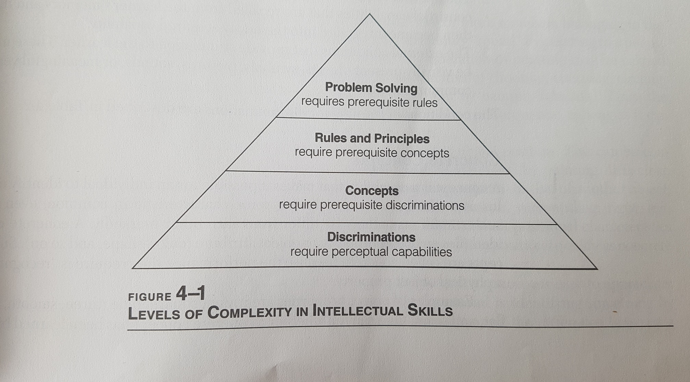

Grundlagen des E-Learning
Lehrziele
Ich bin ein überarbeiteter Mustertext. Ich bin ein überarbeiteter Mustertext. Ich bin ein überarbeiteter Mustertext. Ich bin ein überarbeiteter Mustertext. Ich bin ein überarbeiteter Mustertext. Ich bin ein überarbeiteter Mustertext. Ich bin ein überarbeiteter Mustertext. Ich bin ein überarbeiteter Mustertext. Ich bin ein überarbeiteter Mustertext. Ich bin ein überarbeiteter Mustertext. Ich bin ein überarbeiteter Mustertext. Ich bin ein überarbeiteter Mustertext. Ich bin ein überarbeiteter Mustertext. Ich bin ein überarbeiteter Mustertext. Ich bin ein überarbeiteter Mustertext. Ich bin ein überarbeiteter Mustertext. Ich bin ein überarbeiteter Mustertext. Ich bin ein überarbeiteter Mustertext. Ich bin ein überarbeiteter Mustertext.
Was sind Lehrziele?
Als Instructional Designer überlegen Sie sich, was die Teilnehmer Ihres E-Learning Produktes lernen sollen.
Diese Überlegungen verschriftlichen Sie durch Lehrziele.
Lehrziele sind probabilistisch. Wir können nicht garantieren, dass sie erreicht werden. Wir können lediglich die Wahrscheinlichkeit erhöhen, sie zu erreichen.
Linear Algebra

The Science of Everyday Thinking

[...] intended learning outcome (ILO) is a statement describing what and how a student is expected to learn after exposure to teaching
Intended learning outcome clarifies what the student should be able to perform after teaching that couldn’t be performed previously
Biggs (2007, S. 64 - 70)To develop an analytical understanding of the kinematics and kinetics and elastic behaviours of machine elements under loading vs. Using given principles, to solve a mechanical problem that involves loading and motion
Constructive Alignment
Es wäre törricht, Lehrziele zu bestimmen und in der Instruktion gar nicht auf diese Ziele zu achten.
Man sollte daher Lehrziele, Instruktion und das Assessment aufeinander abstimmen.
Diese Verzahnung nennt man Constructive Alignment. Lehrziele müssen hierfür anzeigen, zu was Lernende nach der Lerneinheit fähig sind.
Kleine Übung
Techniques for learning and retaining information longer
Schreiben Sie mit Ihrer Nachbarin dieses Lehrziel um, so dass es später prüfbar ist und anzeigt, wozu die Lernenden nach der Lerneinheit in der Lage sind. Nehmen Sie sich hierfür 2 Minuten Zeit.
Verben
Ein Lehrziel, welches anzeigt, wozu Lernende nach der Lerneinheit in der Lage sind, braucht starke Verben. Die Auswahl der Verben gibt an, welche Fähigkeit Lernende aufbauen sollten.

Übung
Überlegen Sie sich in Ihrer Kleingruppe jeweils ein Lehrziel für Ihr E-Learning Produkt. Achten Sie bei dem Lehrziel darauf, dass es prüfbar ist, starke Verben enthält und anzeigt, wozu Lernende nach der Lerneinheit in der Lage sind.
Überlegen Sie sich zunächst alleine das Lehrziel und diskutieren Sie das Lehrziel in Ihrer Kleingruppe. Nehmen Sie sich 10 Minuten Zeit
Lehrzieltaxonomien
Lehrziele stehen selten für sich, sondern sind in Lehrzieltaxonomien eingebettet. Lehrzieltaxonomien definieren in welchen Klassen bzw. Schwierigkeitsstufen sich Lehrziele befinden.
Bloomsche Taxonomie
Drei Ebenen: Motor, cognitive and affective
Von einfach zu komplex, von konkret zu abstrakt. Zudem ist die Lehrzieltaxonomie kumulativ.
 Krathwohl (2002)
Krathwohl (2002)
Revision of Bloom's Taxonomy
Die Revision des Bloomschen Taxonomie ist zweidimensional und weniger hierarchisch.
 Krathwohl (2002)
Krathwohl (2002)
Solo Taxonomie

Lehrzieltaxonomie nach Gagné
Fünf Ebenen: Intellectual Skill, Cognitive Strategy, Verbal Information, Attitude, Motor Skill
Übung
Nehmen Sie sich Ihr Lehrziel von vorhin und versuchen Sie, Ihr Lehrziel in 3 verschiedene Taxonomien einzuordnen. Diskutieren Sie anschließend in Ihrer Kleingruppe die Einordnung Ihres Lehrziels in die Taxonomien.